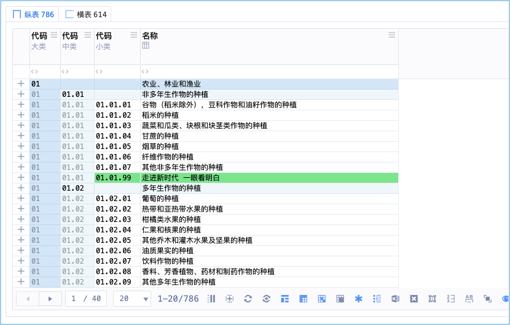
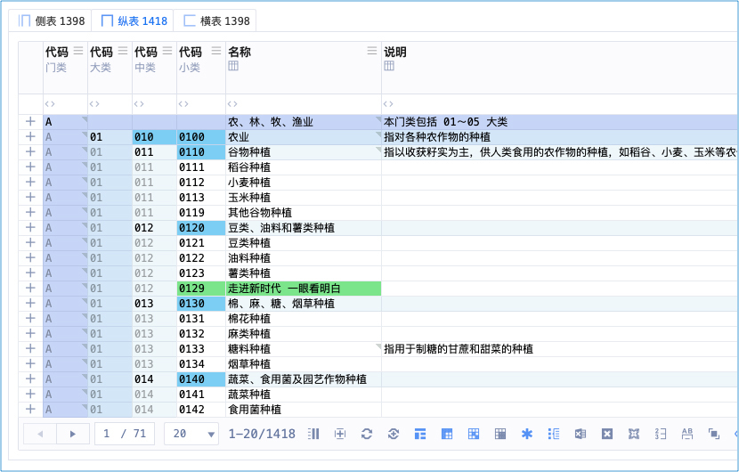
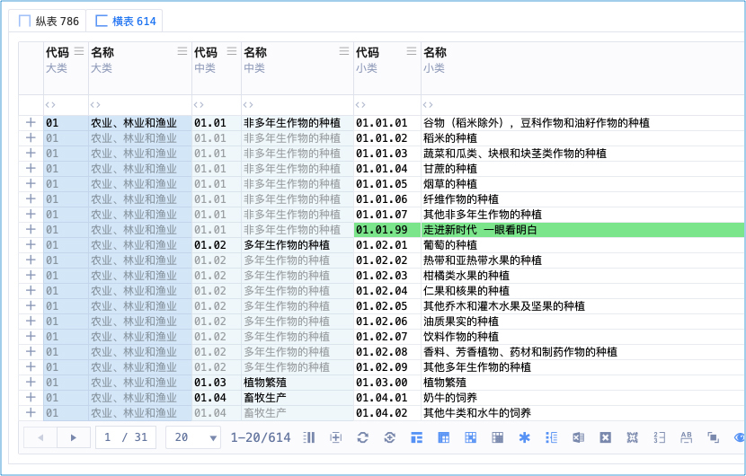
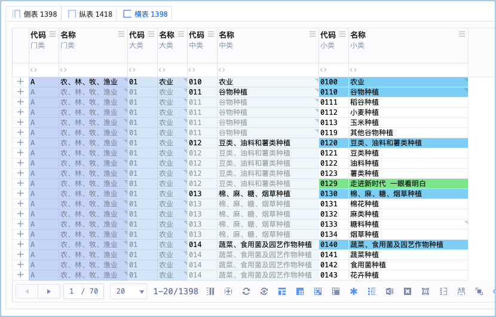
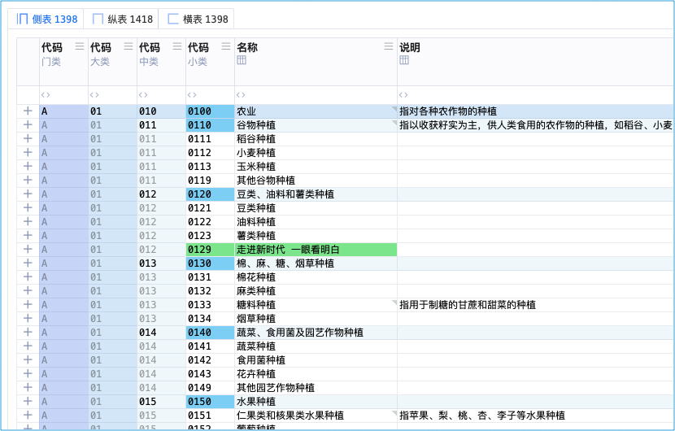

扶摇九剑
简称：九剑
石壁有字
《扶摇九剑》
扶摇直上九剑飞，有进无退意不归。
冲破拘束得大妙，纵横宇宙我最威。
总决式
归妹趋无妄，
无妄趋同人，
同人趋大有。
纵剑最高横辅之，
纵剑小雕为落剑，
横剑小雕为荡剑。
纵剑门类转横为侧，
横剑门类转纵为归，
多合集归、余者奇。
纵剑式


横剑式


落剑式


荡剑式


侧剑式

归剑式
合剑式
集剑式
奇剑式
现实世界
认证机构信息管理系统 中的 「高维」
武侠世界
天下第一剑法
五绝：南扶 · 扶摇子 成名绝技
扶摇子于重伤之际，传功于穿越主（审核员东方正美）
术语对照
| 武学术语 | 系统术语 | 说明 |
|---|---|---|
| 九剑 | 高维 | 高维表格 |
| 纵剑式 | 纵表 | 表就是剑、剑就是表 |
| 横剑式 | 横表 | |
| 落剑式 | 落表 | |
| 荡剑式 | 荡表 | |
| 侧剑式 | 侧表 | |
| 归剑式 | 归表 | |
| 合剑式 | 合表 | |
| 集剑式 | 集表 | |
| 奇剑式 | 奇表 |
作者笔记
第一剑：纵剑式 - 纵表
第二剑：横剑式 - 横表
第三剑：落剑式 - 落表
第四剑：荡剑式 - 荡表
第五剑：侧剑式 - 侧表
第六剑：归剑式 - 归表
第七剑：合剑式 - 合表
第八剑：集剑式 - 集表
第九剑：奇剑式 - 奇表
主要就是：纵、横、落、荡
纵横是最基础的剑招
纵 x 小类雕栏 = 落
横 x 小类雕栏 = 荡
落、荡的命名由来：
落的命名逻辑：
是要给：纵表中有小类雕栏（花）的这种表、命名
小类雕栏就像花一样
数据如水、纵向的水，所以引申出雨水，落下成花，所以叫：落（二者要成对，都要草字头、三点水这种字）
荡的命名逻辑：
是要给：横表中有小类雕栏（花）的这种表、命名
数据如水、横向的水，所以引申出海水，激荡成花，所以叫：荡（二者要成对，都要草字头、三点水这种字）
雅意：一个是纵向雨水落下成花，一个是横向海水激荡成花，落、荡由此得名
其余看看就行，不必执着
要你一夜学会，恐怕有点强人所难
你学不学得成，就看你的悟性了